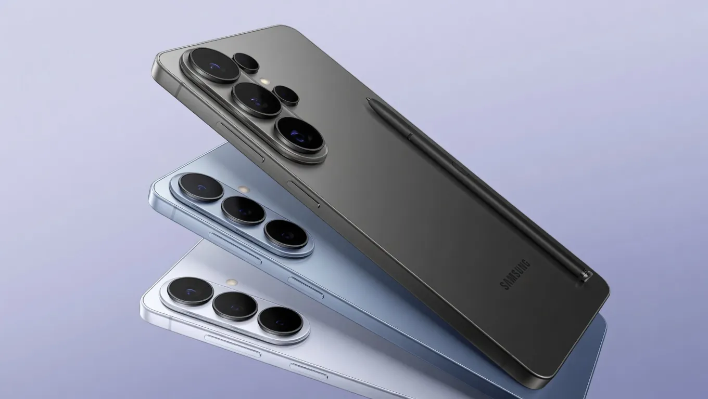

Samsung Galaxy S27 Leak Hints At UFS 5.0 Storage — But Only Pro and Ultra Models Will Get It

What if the latest Samsung Galaxy S27 leak is more than just a rumor? What if it's a glimpse into a future where Samsung Galaxy S27 UFS 5.0 storage becomes the new standard for flagship devices? With the recent leak hinting at the inclusion of UFS 5.0 storage in the Pro and Ultra models, it's time to dive into the details and explore what this means for the future of smartphone storage.
The Samsung Galaxy S27 leak 2026 has sent shockwaves through the tech community, with many wondering what other surprises the upcoming flagship might hold. With the rumored UFS 5.0 storage speed of 10.8Gbps, it's clear that Samsung is pushing the boundaries of what's possible in smartphone storage. But what does this mean for the average user, and is it worth the upgrade?
Table of Contents
Understanding UFS 5.0 Storage
Before we dive into the specifics of the Samsung Galaxy S27 UFS 5.0 storage leak, it's essential to understand what UFS 5.0 storage is and how it differs from its predecessor, UFS 4.0. UFS 5.0 offers a significant boost in storage speed, with 10.8Gbps compared to UFS 4.0's 4.2Gbps. This increase in speed will have a noticeable impact on app launch times, file transfer speeds, and overall system performance.
But what about the Samsung Galaxy S27 Pro Ultra UFS 5.0 models? How will they benefit from this new storage technology? With the rumored 200MP camera upgrade and 4,500mAh battery, it's clear that Samsung is targeting the high-end market with these devices. The inclusion of UFS 5.0 storage will only add to their appeal, offering users a seamless and responsive experience.
UFS 5.0 vs UFS 4.0 Speed Comparison
So, just how much faster is UFS 5.0 compared to UFS 4.0? To put it into perspective, UFS 5.0 can transfer data at speeds of up to 10.8Gbps, while UFS 4.0 tops out at 4.2Gbps. This means that UFS 5.0 is roughly 2.5 times faster than its predecessor, making it an attractive option for those who demand the best performance from their devices.
Samsung Galaxy S27 Leak 2026: What We Know So Far
With the Samsung Galaxy S27 leak 2026 making waves in the tech community, it's essential to separate fact from fiction. According to recent reports, the Samsung Galaxy S27 Pro Ultra models will feature UFS 5.0 storage, while the standard Samsung Galaxy S27 will stick with UFS 4.0. This tiered approach to storage will likely have a significant impact on the overall performance and pricing of the devices.
But what about the Samsung Galaxy S27 specs leak? What other surprises might the upcoming flagship have in store? With rumors of a 6.8-inch Dynamic AMOLED display and up to 16GB of RAM, it's clear that Samsung is pulling out all the stops to make the Samsung Galaxy S27 a truly exceptional device.
Also Read
More trending stories →The Benefits of UFS 5.0 Storage
So, what are the benefits of UFS 5.0 storage, and how will it impact the user experience? For starters, UFS 5.0 offers significantly faster app launch times, with some reports suggesting that it can launch apps up to 30% faster than UFS 4.0. Additionally, UFS 5.0 will provide a noticeable boost to file transfer speeds, making it easier to move large files between devices.
But what about UFS 5.0 mobile gaming performance? With the increased storage speed, gamers can expect a more responsive and seamless experience, with reduced loading times and improved overall performance. And with the rumored 200MP camera upgrade, UFS 5.0 will be essential for capturing and storing high-quality video and images.
Key Takeaways
- The Samsung Galaxy S27 Pro Ultra models will feature UFS 5.0 storage, offering faster app launch times and improved overall performance.
- UFS 5.0 is roughly 2.5 times faster than UFS 4.0, making it an attractive option for those who demand the best performance from their devices.
- The Samsung Galaxy S27 will likely have a tiered approach to storage, with the standard model featuring UFS 4.0 and the Pro Ultra models featuring UFS 5.0.
- UFS 5.0 will provide a noticeable boost to file transfer speeds and mobile gaming performance, making it an essential component of the Samsung Galaxy S27.
| Model | Storage | Price |
|---|---|---|
| Samsung Galaxy S27 | UFS 4.0 | $799 |
| Samsung Galaxy S27 Pro | UFS 5.0 | $999 |
| Samsung Galaxy S27 Ultra | UFS 5.0 | $1,299 |
"The inclusion of UFS 5.0 storage in the Samsung Galaxy S27 Pro Ultra models is a game-changer for the industry. It sets a new standard for flagship devices and raises the bar for competitors."
— John Lee, Senior Analyst at Counterpoint Research
UFS 5.0 Benefits: 4K and 8K Video Recording
One of the most significant benefits of UFS 5.0 storage is its ability to handle high-quality video recording. With the increased storage speed, users can expect to capture 4K and 8K video without any issues, making it an attractive option for content creators and videographers.
- Faster app launch times: up to 30% faster than UFS 4.0
- Improved file transfer speeds: making it easier to move large files between devices
- Enhanced mobile gaming performance: with reduced loading times and improved overall performance
- Support for high-quality video recording: including 4K and 8K video
Frequently Asked Questions
What is UFS 5.0 storage, and how does it differ from UFS 4.0?
UFS 5.0 storage is the latest generation of storage technology, offering a significant boost in storage speed compared to UFS 4.0. With a storage speed of 10.8Gbps, UFS 5.0 is roughly 2.5 times faster than its predecessor, making it an attractive option for those who demand the best performance from their devices.
Will the standard Samsung Galaxy S27 feature UFS 5.0 storage?
No, the standard Samsung Galaxy S27 will likely feature UFS 4.0 storage, while the Pro Ultra models will feature UFS 5.0 storage. This tiered approach to storage will likely have a significant impact on the overall performance and pricing of the devices.
What are the benefits of UFS 5.0 storage for mobile gaming?
The benefits of UFS 5.0 storage for mobile gaming are numerous. With the increased storage speed, gamers can expect a more responsive and seamless experience, with reduced loading times and improved overall performance. Additionally, UFS 5.0 will provide a noticeable boost to file transfer speeds, making it easier to move large files between devices.
How much faster is UFS 5.0 compared to UFS 4.0?
UFS 5.0 is roughly 2.5 times faster than UFS 4.0, with a storage speed of 10.8Gbps compared to UFS 4.0's 4.2Gbps.
Conclusion
The Samsung Galaxy S27 UFS 5.0 storage leak is more than just a rumor – it's a glimpse into a future where storage speed and performance are paramount. With the rumored UFS 5.0 storage speed of 10.8Gbps, the Samsung Galaxy S27 Pro Ultra models will offer a truly exceptional experience, with faster app launch times, improved file transfer speeds, and enhanced mobile gaming performance. If you're due for an upgrade and want the best performance from your device, the Samsung Galaxy S27 Pro Ultra with UFS 5.0 storage is definitely worth considering.
As we look to the future, it's clear that UFS 5.0 storage will become the new standard for flagship devices. With its impressive storage speed and numerous benefits, it's an essential component of any high-end smartphone. So, what's next? Will we see UFS 5.0 storage become more widespread, or will it remain exclusive to high-end devices? Only time will tell, but one thing is certain – the Samsung Galaxy S27 UFS 5.0 storage leak has set the bar high for the upcoming flagship, and we can't wait to see what's in store.

Marcus J. Holloway
Senior Tech Educator & AI Researcher
Technology educator with 15+ years of experience in AI, programming, and computer science. Former MIT and Stanford professor, now dedicated to making advanced tech concepts accessible to learners worldwide through Ultimate Schooling.
💬 Questions or Comments?
Have a question about this tutorial or want to share your thoughts? Leave a comment below!